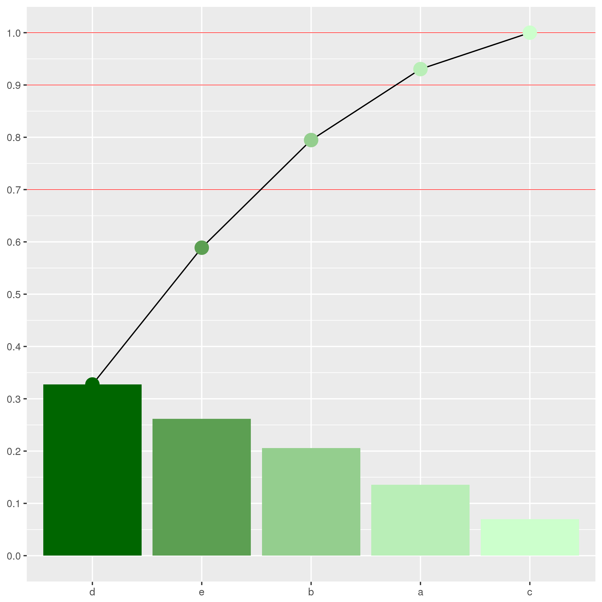

brew tap homebrew/science
brew install rsudo apt-get install r-basesudo yum install epel-release
sudo yum --enablerepo=epel install Rbrew cask install rstudiowget https://download1.rstudio.org/rstudio-1.1.447-amd64.deb
sudo dpkg -i rstudio-1.1.447-amd64.debsudo yum install wget
wget https://download2.rstudio.org/rstudio-server-rhel-1.1.442-x86_64.rpm
sudo yum install rstudio-server-rhel-1.1.442-x86_64.rpm| 演算子 | 使い方 | 結果 |
|---|---|---|
+ |
1 + 2 |
3 |
- |
1 - 2 |
-1 |
* |
2 * 3 |
6 |
/ |
2 / 3 |
0.6666667 |
^ |
2 ^ 3 |
8 |
= は非推奨，<- を使う<<- はグローバル環境への代入
<<-よりもassign関数を使うほうがいい| 演算子 | 使い方 |
|---|---|
<- |
a <- 3 |
<<- |
a <<- 5 |
""でくくる。TRUEとFALSEhoge <- "やっほー"
fuga <- 1.414
foo <- TRUE
hoge; fuga; foo
#> [1] "やっほー"
#> [1] 1.414
#> [1] TRUEc()を使う
hoge <- c("やっほー", "おっはー")
fuga <- c(1.414, 1.732)
foo <- c(TRUE,FALSE)
hoge; fuga; foo
#> [1] "やっほー" "おっはー"
#> [1] 1.414 1.732
#> [1] TRUE FALSEhoge2 <- c("やっほー", 1, TRUE)
fuga2 <- c(1.414, TRUE)
hoge2; fuga2
#> [1] "やっほー" "1" "TRUE"
#> [1] 1.414 1.000quiz1 <- c(1+TRUE, "やっほー")
quiz2 <- c(1+TRUE, 3) * FALSEquiz1
#> [1] "2" "やっほー"
quiz2
#> [1] 0 0TRUEは1に，FALSEは0になります。
a <- c(1,2,3,4)
b <- c(1,2)
c <- c(1,2,3)a * 3
#> [1] 3 6 9 12
a + b
#> [1] 2 4 4 6
b + a
#> [1] 2 4 4 6
a * c
#> Warning in a * c: longer object length is not a multiple of shorter object
#> length
#> [1] 1 4 9 4[1]からはじまる![行番号,列番号]で参照する!a <- c(1,2,3,4)
dim(a) <- c(2,2) #2次元配列
a
#> [,1] [,2]
#> [1,] 1 3
#> [2,] 2 4
a[1,2]
#> [1] 3
a[c(1,2),2]
#> [1] 3 4a
#> [,1] [,2]
#> [1,] 1 3
#> [2,] 2 4
tmp <- a[2,1]
a[2,1] <- a[1,2]
a[1,2] <- tmp
a
#> [,1] [,2]
#> [1,] 1 2
#> [2,] 3 4NAはNot Availablena_vec <- c(NA, NA, NA)
is.na(na_vec)
#> [1] TRUE TRUE TRUE
na_vec + 1
#> [1] NA NA NA
na_vec == 1
#> [1] NA NA NA
na_vec == NA
#> [1] NA NA NA
na_vec != NA
#> [1] NA NA NAa <- readline("入力してね: ")
#> 入力してね:
#> 入力してね: ここに入力quiz <- function() {
answer <- "さくらんぼ"
ans_u <- readline("おうとうってなんだ？: ")
if (ans_u == answer) print("あってるよ")
else print("まちがってるよ")
}
quiz()
#> おうとうってなんだ？:
#> [1] "まちがってるよ"#include "/usr/include/stdio.h"
#include "/usr/include/stdlib.h"
#include "/usr/include/string.h"
#include "/usr/include/R/R.h"
void quiz(char **ans_u);
void quiz(char **ans_u) {
char answer[] = "さくらんぼ";
char yes[] = "あってるよ";
char no[] = "まちがってるよ";
printf("おうとうってなんだ？: %p\n",*ans_u);
if(strcmp(answer,*ans_u) == 0) {
printf("%s",yes);
} else {
printf("%s",no);
}
}gcc -shared -fPIC -I/usr/include/R -o quiz_point.so quiz_point.cR CMD SHLIB quiz_point.cdyn.load("./C/quiz_point.so")
ANS <- "さくらんぼ"
.C('quiz', as.character(ANS))
#> list()
#> おうとうってなんだ？: まちがってるよ
dyn.unload("./C/quiz_point.so")R.hのinclude必要!?.Cでデータ型を確認する-I/usr/include/Rvoidにする。.soか.dlldyn.load(“hoge.so”)で読み込むdyn.unload(“hoge.so”)でアンロード
.C('関数名',引数)か.Call()を使う#!/bin/sh
if [ $# -eq 1 ]
then
echo "おうとうってなんだ？"
R --vanilla --no-save --slave -f ./quiz_sh.R --args $1
else
echo "引数の数が正しくありません。"
fians_u <- commandArgs(trailingOnly = TRUE)
diagnosis <- c("まちがってるよ\n",
"あってるよ\n")
cat( ans_u )
cat( "\n" )
cat(diagnosis[ (ans_u == "さくらんぼ") + 1 ])chmod u+x quiz_sh.shtrailingOnly = TRUEを指定する。
FALSEだとコマンドとオプションも渡される。--argsを指定する。.Rスクリプトを直接実行できる。#! /usr/bin/R --vanilla --no-save --slave -f
quiz <- function() {
answer <- "さくらんぼ"
ans_u <- readline("おうとうってなんだ？: ")
if (ans_u == answer) print("あってるよ")
else print("まちがってるよ")
}
quiz()chmod u+x ファイル名R --vanilla --no-save --slave << EOF
quiz <- function() {
answer <- "さくらんぼ"
ans_u <- readline("おうとうってなんだ？: ")
if (ans_u == answer) print("あってるよ")
else print("まちがってるよ")
}
quiz()
EOF```
などなどいろいろ用意されている。
install.packages()でインストールlibrary()で読み込み
require()を使う人もいる。detach()でアンロードinstall.packages("パッケージ名")
library(パッケージ名)
detach("package:パッケージ名", unload = TRUE)R --no-save << EOF > logfile 2>&1
install.packages("パッケージ名")
EOF```
%>%が使えるinstall.packages("tidyverse")
library(tidyverse)library(tidyverse)geom関数でプロットの形式を変えれるggsave()で簡単にプロットを保存できるとりあえずここまでにしておく。
mtcars_tibble <- as_tibble(mtcars)
ggplot(
data = mtcars_tibble,
mapping = aes(
x = mpg,
y = disp,
color = cyl
)
) +
geom_point()+で関数をつなぐfunction()をつかう。{}でくくる。pareto_func <- function(vec) {
res_count <- c("a" = NA, "b" = NA, "c" = NA, "d" = NA, "e" = NA)
for(moji in c("a", "b", "c", "d", "e")) {
res_count[moji] <- sum(vec == moji)
}
res_count <- sort(res_count, decreasing = TRUE)
res_pareto <- cumsum(res_count)
res_pareto <- res_pareto / res_pareto[5]
list("count" = res_count, "density" = res_pareto)
}function(a = 5)のようにデフォルトも設定できるc("a" = NA)で名前を与えられる。
names(ベクトル)で名前を確認できる。sort()はならべかえcumsum()は累積和cumsum( c(1, 2, 3, 4, 5))
#> [1] 1 3 6 10 15stringAsFactors = FALSEにする
read.csv("ファイル名", stringAsFactors = FALSE)read_csv(
"ファイル名",
locale = locale(encoding = "エンコード")
)row.names = FALSE
sample()runif()rnorm()rgamma()sample()で単純なデータを作成できるsizeは何個とりだすかreplaceは複数回とりだせるかprobは確率を指定する。
sample(1:100, size = 2)
#> [1] 10 53| 関数 | 確率分布 | 使い方 |
|---|---|---|
runif() |
一様分布 | runif(5) |
rnorm() |
正規分布 | rnorm(5) |
rgamma() |
ガンマ分布 | rgamma(5,shape = 2, rate = 5) |
rbeta() |
ベータ分布 | rbeta(5, shape1 = 0.5, shape2 = 0.5) |
prob_vec <- sample(1:5, size = 5)
vec1 <- sample(
1:5,
size = 10000,
replace = TRUE,
prob = prob_vec
)
replace_abcde <- function(vec1) {
num <- 1
for(moji in c("a", "b", "c", "d", "e")) {
vec1[vec1 == num] <- moji
num <- num + 1
}
assign("vec1", vec1, envir = parent.env(environment()))
}
replace_abcde(vec1)
result <- pareto_func(vec1)
result
#> $count
#> d b e c a
#> 3320 2674 1950 1347 709
#>
#> $density
#> d b e c a
#> 0.3320 0.5994 0.7944 0.9291 1.0000result <- as_tibble(result) %>%
mutate(
name = names(result$count),
count_density = count / sum(count)
)result %>%
ggplot() +
geom_hline(
yintercept = c(0.7,0.9,1),
size = 0.2,
color = "#ff0000"
) +
geom_bar(
aes(name, count_density, fill = density),
stat = "identity"
) +
geom_line(aes(name, density, group ="1")) +
geom_point(
aes(name, density, color = density),
size = 5
) +
scale_x_discrete(limits = result$name) +
scale_y_continuous(breaks = seq(0, 1, by = 0.1)) +
scale_color_gradient(low = "#006600", high = "#ccffcc") +
scale_fill_gradient(low = "#006600", high = "#ccffcc") +
# viridis::scale_fill_viridis(option="inferno") +
# viridis::scale_color_viridis() +
coord_cartesian(ylim = c(0,1)) +
labs(
x = names(result$count),
y = NULL
) +
theme(legend.position = "none")
# ggsave("pareto_graph.png")
今回は，他言語との連携をメインにRを紹介しました。
ここでは触れなかったことの方が多いです。
統計だけじゃない，Rを楽しみましょう！